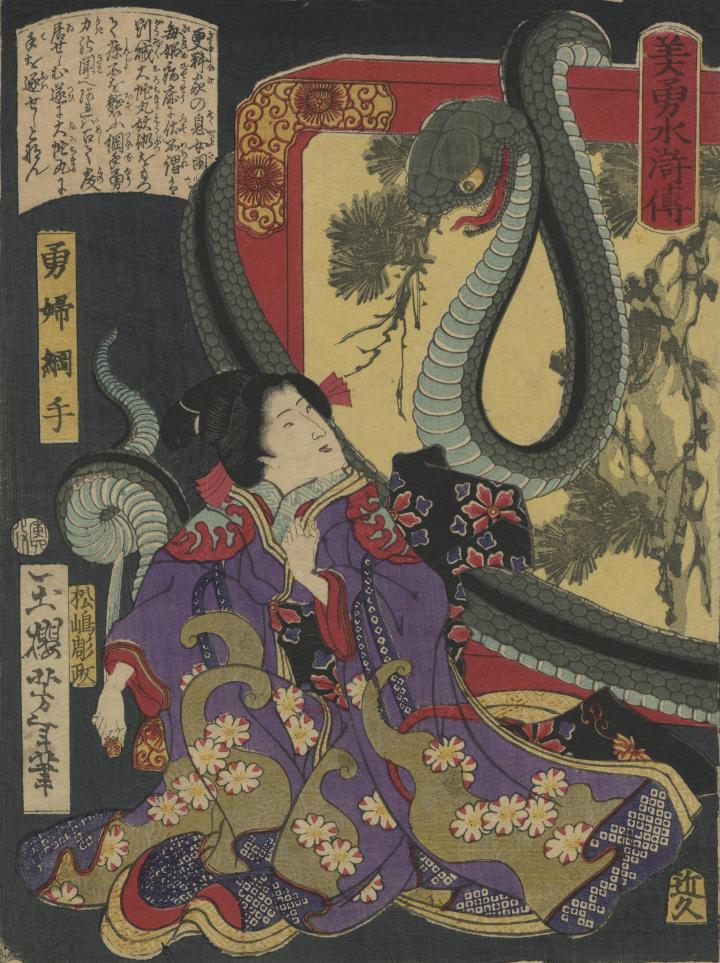

綱手の背後から大蛇が現われている。目玉が大きい。
著作者：一魁芳年／出典：親書誌：U426_nichibunken_0355：美勇水滸伝 勇婦綱手；ビユウ スイコデン ユウフ ツナデ／日付：2014／資源識別子：U426_nichibunken_0355_0001_0000
Copyright (c)2010- International Research Center for Japanese Studies, Kyoto, Japan. All rights reserved.